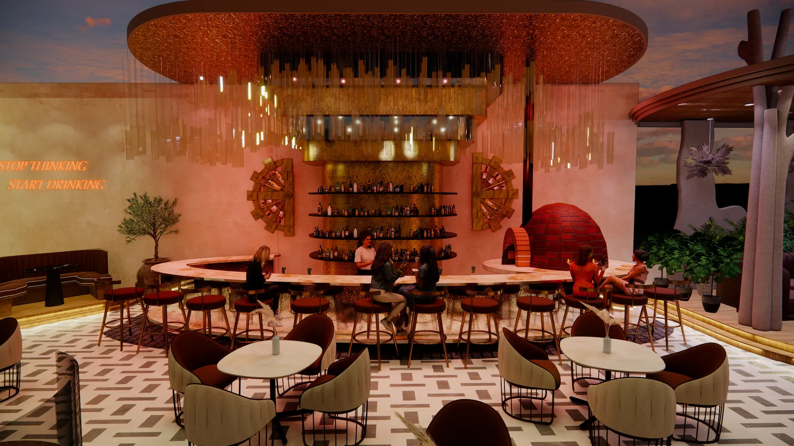
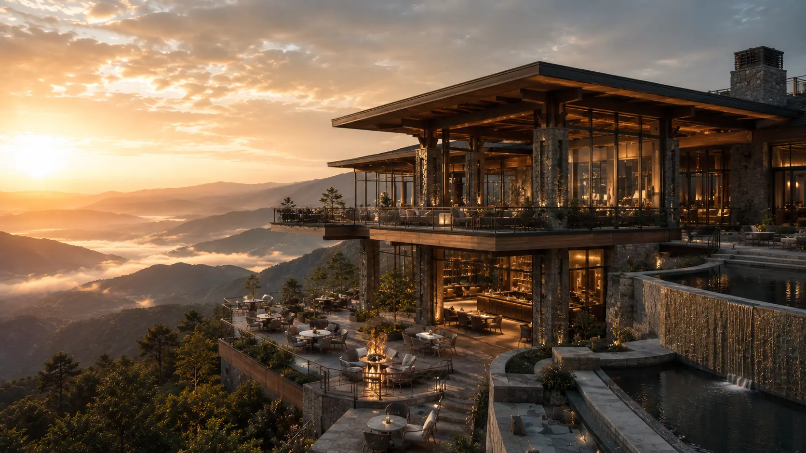

In many Indian hotels, the restaurants, bars and banquets earn almost as much as the rooms. Yet F&B is often planned last, squeezed into whatever space is left after the room count is fixed.
Food and beverage planning decides which outlets a hotel will have, how big each one is, where it sits and how it connects to the kitchens behind it. When the plan is right, the outlets serve residents and also pull in local diners. When it is wrong, the hotel carries large, half-empty dining rooms that cost money every day.
This guide explains hotel restaurant and F&B planning for Indian projects. It covers the outlet mix, sizing, all-day dining, specialty restaurants and bars, location, kitchens, classification rules and food courts in large resorts. For the service side, see our guide to hotel back-of-house and circulation planning.
Why F&B Planning Matters in Indian Hotels
Indian hotels lean on food and beverage more than many hotels abroad. The 21st FHRAI hotel industry survey, prepared by STR and Horwath HTL from data on 475 hotels for 2017–18, found that F&B and banquet operations made up 42.3 per cent of hotel revenue. For hotels with up to 50 rooms, F&B outlets alone made up 37.8 per cent of revenue, and with banquets included, about half.
The reason is local demand. Weddings, family celebrations, corporate events and dining out bring in far more people than the rooms do. A hotel in a tier-2 city may be the best restaurant and banquet venue in town. That makes F&B a core part of the business case, and it belongs in the very first feasibility study. Our guide to the hotel feasibility study explains how F&B and banquet demand are tested before design.
Choosing the Outlet Mix
The first decision is which outlets the hotel needs. Most Indian hotels choose from this list:
- All-day dining. The workhorse restaurant, serving breakfast, lunch and dinner, often with a buffet.
- Specialty restaurant. A single-cuisine or chef-led restaurant with its own name and identity.
- Bar or lounge. A drinks-led space, sometimes with light food or live music.
- Lobby café. Coffee, snacks and informal meetings, visible from the lobby.
- Poolside or terrace outlet. Casual food and drinks outdoors, common in resorts.
- Room service. No seating, but it needs kitchen capacity and a service route to every floor.
- Banquets and event catering. Halls and lawns served from a banquet kitchen.
- Food court or multi-counter dining. In large resorts, pilgrimage hotels and mixed-use projects.
More outlets do not mean more revenue. Each outlet needs staff, a kitchen connection and a reason to exist. A 60-room hotel with four restaurants will struggle to keep any of them busy. A common pattern for mid-size hotels is one strong all-day dining room, one bar and one specialty or rooftop outlet, with banquets alongside.
Let the guest mix drive the plan
The Cornell hotel planning tool links outlet design to the main guest type:
- Business guests. Faster service options, counter seating for solo travellers, tables that can be combined for groups and private dining rooms.
- Groups and families. Buffet service, with enough circulation around the buffet, more tables for four to six people and more booth seating for families with small children.
- High breakfast demand. A buffet, plus a second point of service such as continental breakfast in the lobby bar.
- High in-room dining demand. A larger room service operation, which affects the back-of-house design.
| Hotel type | Typical outlet mix | Planning priority |
|---|---|---|
| City business hotel | All-day dining, bar, lobby café, private dining | Fast breakfast, meetings over meals, walk-in trade |
| Wedding and banquet hotel | All-day dining, banquets, lawns, bar | Banquet kitchen capacity, event service routes |
| Resort | All-day dining, specialty restaurant, poolside, bar | Views, outdoor seating, room service to villas |
| Boutique or heritage hotel | One signature restaurant, bar or courtyard dining | Character, one well-run kitchen |
| Pilgrimage hotel | Large dining hall, café, sometimes multi-counter dining | Group meals at fixed times, dietary needs |
How Big Should Each Outlet Be?
Restaurant area is usually planned per cover, meaning per seat. Designing Buildings gives these rules of thumb for dining area, including the routes between tables:
| Service type | Area per diner |
|---|---|
| Banquet (minimum) | 10–11 sq ft |
| Full-service restaurant | 11–14 sq ft |
| Fast food (minimum) | 12–15 sq ft |
| Table service, hotel or club | 16–20 sq ft |
| Counter service | 17–19 sq ft |
| High-end dining | 18–20 sq ft |
As a worked example, a 120-seat all-day dining room at 16 to 20 sq ft per diner needs roughly 1,900 to 2,400 sq ft of dining area, before the buffet, live counters and service stations. The same source suggests that a standalone restaurant gives about 60 per cent of its area to dining and 40 per cent to kitchen, preparation and storage. Hotels work differently, because one main kitchen often serves several outlets, so we size kitchens on total covers and service style across all the outlets they feed.
How many seats?
Seat count depends on the room count, expected occupancy, the share of guests who eat in the hotel and the number of local diners. A city hotel whose guests eat out in the evening needs fewer dinner seats than a remote resort where every guest eats in. The breakfast peak usually decides the size of the all-day dining room, because most residents arrive within the same two hours. We work from the operator's projections where there is one, and from the feasibility study where there is not.
Planning the All-Day Dining Restaurant
The all-day dining room works harder than any other outlet. It handles a breakfast rush, a quieter lunch, afternoon coffee and a dinner service that may be busy or empty depending on the day. The plan has to work at all of these.
- Buffet that flows. Place the buffet so guests can circulate around it without queues blocking the seating. Leave space for the plate drop, the egg station and the live counters Indian guests expect, such as dosa, chaat or tandoor.
- Zones that can close. Split the room into two or three zones. At breakfast all of them open. At lunch one can close, so the room never looks empty.
- Mixed seating. Tables for two that can be joined, tables for four to six for families, some booths and a few counter seats for solo guests.
- Daylight and a view. The breakfast room is where guests spend their first hour of the day. Put it on the garden, pool or street, never in a basement.
- Short service routes. Keep the kitchen door, the dishwash return and the buffet back-up close together so staff do not cross the dining room with full trays.

Specialty Restaurants and Bars
A specialty restaurant gives the hotel a reason for locals to visit. It needs its own identity, separate from the all-day dining room, and often its own entrance so walk-in guests do not have to cross the lobby. A rooftop, a courtyard or a garden pavilion works well, because the setting becomes part of the offer.
Bars need careful placement. A lobby bar adds life to the lobby and catches guests waiting for meetings. A standalone bar or club with music needs acoustic separation from the guest rooms, its own toilets and a route for late-night guests that does not pass through the hotel. Check licensing early. Under the Uttar Pradesh star classification guidelines, a bar licence is mandatory for hotels applying for the Platinum (4-star) and Diamond (5-star) categories with alcohol service.
Designing a bar
- The counter is the anchor. Its shape and finish set the mood of the whole room.
- Back-bar storage. Bottle display, glass washers, ice machines and refrigeration all need space behind the counter.
- Mixed seating. Bar stools, low lounge seating and a few dining tables let the bar serve both drinkers and diners.
- A supply route. Kegs, crates and ice should reach the bar without passing through the seating area.

Where to Place the Outlets
Location decides whether an outlet earns. Four rules guide our plans:
- Visible from the lobby. Guests and visitors should see the café or restaurant as they walk in. An outlet hidden down a corridor gets missed.
- Reachable from the street. Specialty restaurants and bars that depend on local diners need their own entrance or a clear route from the porch.
- Facing the best view. In resorts, give the view to the restaurant and the terrace.
- Close to the kitchen. Every outlet should have direct access to a kitchen or a service pantry. Long, open-air routes from kitchen to table mean cold food.
The Uttar Pradesh guidelines require free accessibility in public areas and to at least one restaurant, along with ramps and an accessible toilet at lobby level. Plan the main restaurant at the same level as the lobby, or with a ramp or lift, so every guest can reach it. Our guide to hotel lobby and public area design covers how restaurants connect to the arrival sequence.
Kitchens Behind the Outlets
Guests see the restaurant. The kitchen decides whether the food arrives on time and at the right temperature. In most hotels, a main kitchen handles bulk preparation and feeds smaller finishing kitchens or pantries next to each outlet. A large banquet operation usually needs its own kitchen next to the halls.
The Uttar Pradesh star classification guidelines set kitchen requirements that affect the plan from the start:
- Segregated cold storage. Meat, fish and vegetables kept in separate freezers.
- Hygienic finishes. Tiled walls and non-slip floors in the kitchen and food production area.
- Separate receiving. Receiving areas and stores kept distinct from the garbage area, with a sink, weighing machine and pre-wash area.
- Garbage segregation. Wet and dry waste separated, with an air-conditioned wet garbage room for 3-star hotels and above.
- Treated water and ventilation. Drinking water treated with UV and filtration, and a proper ventilation system.
Each of these needs floor area, drainage and a place on the plan. Our back-of-house planning guide explains the adjacencies, clean and dirty flows and service lifts that tie kitchens to the outlets they serve.
Banquets and Event Catering
In many Indian hotels the banquet halls and lawns earn more from food than the restaurants do. A wedding for several hundred guests needs hot food served at once, a buffet that moves quickly and a clean-up that starts while the party is still going.
- A kitchen next to the halls. Large halls need a banquet kitchen or a finishing kitchen directly behind them, with wide doors for trolleys and hot boxes.
- Pre-function space. A foyer outside each hall for welcome drinks and snacks, served from its own pantry.
- Lawn catering points. Outdoor events need covered catering pavilions with power, water and drainage, linked to the kitchen by a service path the guests do not use.
- Room for outside caterers. Many families bring their own caterers or speciality cooks. A space where they can set up, with water, gas or power and a wash area, avoids makeshift kitchens on the lawn.
- Separate guest and service routes. At The Bliss in Bijnor, a 2-acre banquet and celebration venue we designed, guest and service circulation are kept apart so catering never crosses the celebration.
Our guide to destination wedding resort architecture covers lawns, mandaps and event service in more detail.
Licences and Approvals That Shape the Plan
Several approvals affect where outlets and kitchens can go. Planning for them early costs far less than redesigning later.
- Food safety licence. Every food business in India needs registration or a licence under FSSAI rules. Kitchen layouts, finishes, storage and pest control are checked against hygiene requirements.
- Bar and excise licence. Rules differ by state and affect where alcohol can be served, including on terraces and lawns.
- Fire safety. Kitchens with gas supply, exhaust ducts and large dining rooms come under fire safety rules for exits, fire separation and suppression. These decide where kitchens and gas banks can sit.
- Star classification. The kitchen and accessibility requirements listed above are checked at inspection, so design to the category you plan to apply for.
F&B in Resorts and Large Hotels
Resorts and large mixed-use hotels are harder to serve. Guests spread out across the site, outdoor dining depends on the weather and the evening crowd may include event guests as well as residents.
- Outdoor dining with a fallback. Terraces and lawns need a covered or indoor option for monsoon evenings and hot afternoons.
- Distance from the kitchen. On large sites, place satellite pantries near the pool, the terraces and villa clusters so food arrives hot.
- Food courts. Large resorts, pilgrimage hotels and mixed-use developments can use multi-counter dining, where several small kitchens share one seating area. It handles large groups quickly and offers choice.
- Room service to villas. Buggy routes and service paths that reach every villa without crossing guest areas.
- Dietary needs. Many Indian guests eat vegetarian, and some hotels in pilgrimage towns serve only vegetarian food. Separate vegetarian preparation areas or an entirely vegetarian kitchen may be part of the brief.
For resort-wide planning of outlets, lawns and service routes, see our guide on how to design a resort in India.

F&B Spaces in Our Work
- Delulu Club, Greater Noida. A 15,000 sq ft rooftop lounge and entertainment terrace at Jagat Farm. The layout flows from an intimate bar precinct through lounge seating to a raised performance stage, with outdoor terraces on either side for alfresco dining. A curved gold-brass bar anchors the room, and a wood-fired pizza oven adds a casual food offer. See the Delulu Club project.
- Sangam Pooja Wellness Resort, Prayagraj. Our interior design includes heritage dining with arched alcoves, in a palette of marble with inlay, carved wood, brass and lime plaster.
- Mukteshwar hill resort (concept). The concept for this 11-acre Himalayan ridge includes a fine-dining restaurant and cliff-terrace dining.
Common F&B Planning Mistakes
- Too many outlets. Four half-empty restaurants cost more to run than two busy ones.
- Sizing for dinner instead of breakfast. The breakfast peak usually decides the all-day dining room.
- No street entrance. Specialty restaurants that rely on local diners are hidden behind the lobby.
- Kitchens too far away. Food travels down long corridors or across open lawns and arrives cold.
- Bars next to bedrooms. Music and late-night noise reach the guest floors.
- No weather backup. Outdoor restaurants close for the monsoon because nobody planned a covered option.
- Licensing left late. Bar and food licences shape the layout and should be checked before the design is fixed.
Frequently Asked Questions
How much of a hotel's revenue comes from food and beverage in India?
The 21st FHRAI hotel industry survey, based on data for 2017 to 2018, found that F&B and banquet operations made up 42.3 percent of hotel revenue. For hotels with up to 50 rooms, F&B outlets alone made up 37.8 percent, and about half including banquets.
How many restaurants should a hotel have?
It depends on the room count, location and guest mix. Many mid-size hotels do well with one strong all-day dining restaurant, one bar and one specialty or rooftop outlet, plus banquets. Adding more outlets than demand supports raises staffing costs without raising revenue.
How much space does a hotel restaurant need per seat?
Rules of thumb put hotel table service at about 16 to 20 sq ft per diner and high-end dining at 18 to 20 sq ft, including the routes between tables. Buffets, live counters and service stations need extra space on top of this.
Where should the kitchen be in a hotel?
The main kitchen should sit close to the receiving bay and stores, with direct links to every outlet through service corridors or pantries. Banquet halls usually need their own kitchen or a large finishing kitchen next to them, so food does not travel long distances.
Does a hotel need a bar licence for star classification?
Under the Uttar Pradesh star classification guidelines, a bar licence is mandatory for hotels applying for the Platinum and Diamond categories with alcohol service. Other states have their own rules, so check the current guidelines and excise requirements for your location early in design.
Plan the Food Before the Floor Plan
Food and beverage is one of the largest revenue lines in an Indian hotel, and one of the hardest to fix once the building is up. The outlet mix, the size of each room, the location of the kitchens and the routes between them should all be settled while the plan is still flexible.
If you are planning a hotel, resort or banquet property and want restaurants that stay busy, talk to our team about your site and your market.